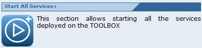
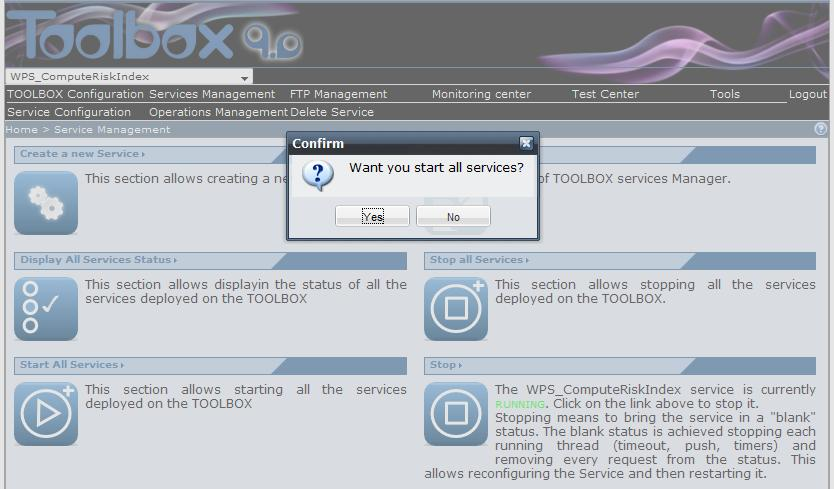
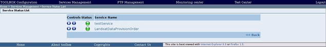

To start all services click on the "Start all services" section link in the Service Management page and click on the "Yes" button when the browser will show a confirmation message. It allows starting all service after a TOOLBOX reload or after a stopping. Starting a service simply means that it is ready to do its initialization and process incoming requests.


After pressing this button, the browser should display a page listing all the services installed on the TOOLBOX and their status (which should be "running", see Manager all services status section).
